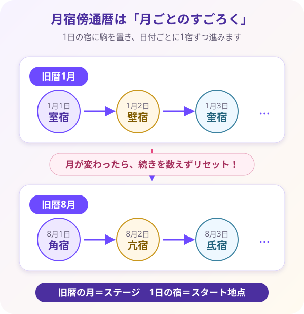

月宿傍通暦の仕組みを知る
自分の宿がどう決まったのかを、旧暦の月と日からたどります。そのあと自分の宿を軸に27宿の全体像をつかみます。
今日は月宿傍通暦の仕組みを見ます。27宿を全部暗記する必要はありません。まず自分の宿が、どこから数えられたのかをつかみましょう。
1. 月宿傍通暦とは？
月宿傍通暦（げっしゅくぼうつうれき）とは、旧暦の「何月何日」と二十七宿を対応させた暦の仕組みです。初めて学ぶときは、お月様のための「お宿予約リスト」だと考えると、ぐっと分かりやすくなります。
「宿（しゅく）」という字には、文字どおり「宿屋」「泊まる場所」という意味があります。月は約27日かけて星空を一周するように見えます。昔の人は、その通り道に並ぶ27個の星の区画を、お月様が一晩ずつ泊まっていく27軒の宿屋に見立てました。
今日は角宿（かくしゅく）、次の日は亢宿（こうしゅく）、その次は氐宿（ていしゅく）というように、月が宿屋を順番に移っていくイメージです。月宿傍通暦は、「旧暦のこの日は、どの宿に当たるのか」を調べるためのスケジュール表なのです。
生まれた日の旧暦月日をこの表に当てはめると、その人の本命宿（ほんめいしゅく）が分かります。そして本命宿を手がかりに、性格の傾向、得意なこと、人との距離感などを読んでいきます。
月＝旅人／27宿＝27軒の宿屋／月宿傍通暦＝宿泊予定表と置き換えてみましょう。「自分が生まれた日に、月はどの宿屋に割り当てられていたのだろう？」と考えると、本命宿の意味を直感的につかめます。
「月が宿屋を巡る」という話は、仕組みを理解するための昔ながらのイメージです。本講座の旧暦二十七宿・月宿傍通暦式では、誕生日当日の実際の月の位置を天体観測で測るのではなく、旧暦月日と定められた表から本命宿を求めます。
2. 自分の宿が決まる仕組み
本命宿を求めるときは、まず新暦の生年月日を旧暦へ直します。そのうえで、旧暦の「月」と「日」を使って宿をたどります。ここで一番大切なのが、毎月1日に数え始める宿が決まっているというルールです。
① 毎月1日の「起点宿」が決まっている
月宿傍通暦では、旧暦の各月1日に、どの宿からスタートするかがあらかじめ決まっています。このスタート地点を起点宿（きてんしゅく）と呼びます。
例えば、旧暦1月1日は室宿（しつしゅく）から始まります。一方、旧暦8月1日は角宿（かくしゅく）から始まります。同じ「1日」でも、月によって出発する宿が違うのです。
② 2日以降は「1日1宿」ずつ進む
1日の起点宿が決まったら、2日、3日、4日と日付が進むたびに、宿も決められた順番で1つずつ進みます。27宿は円のようにつながっているため、最後まで進んだら最初の宿へ戻ります。
旧暦1月を例にすると、1月1日＝室宿 → 1月2日＝壁宿（へきしゅく） → 1月3日＝奎宿（けいしゅく）となります。旧暦1月3日生まれなら、室宿から2つ進んだ奎宿が本命宿です。
③ 月が変わったら、その月の起点へ戻る
ここが、初心者が最も間違えやすいところです。新しい月になったとき、前月の最後の宿から続きを数えるのではありません。その月専用の起点宿へ、いったん戻って数え直します。
つまり、旧暦7月の続きとして8月を数えるのではなく、旧暦8月1日になったら角宿へ戻ります。8月2日は亢宿、8月3日は氐宿というように、角宿から新しくスタートします。
月宿傍通暦は、月ごとにステージが変わる「すごろく」のようなものです。新しいステージである月が始まったら、その月専用のスタート地点へ駒を置き直します。そこから、日付に合わせて1日1マスずつ進めるイメージです。
旧暦の月＝ステージ／1日の宿＝スタート地点／日付＝進むマス数と覚えておけば、計算の流れを見失いにくくなります。

下の表で、まず自分の旧暦月の「1日の宿」を見つけましょう。そこがすごろくのスタート地点です。自分の旧暦の日付まで、1日1宿ずつ進むと本命宿に着きますよ。
| 旧暦月 | 1日の宿 |
|---|---|
| 1月 | 室宿（しつしゅく） |
| 2月 | 奎宿（けいしゅく） |
| 3月 | 胃宿（いしゅく） |
| 4月 | 畢宿（ひつしゅく） |
| 5月 | 参宿（しんしゅく） |
| 6月 | 鬼宿（きしゅく） |
| 7月 | 張宿（ちょうしゅく） |
| 8月 | 角宿（かくしゅく） |
| 9月 | 氐宿（ていしゅく） |
| 10月 | 心宿（しんしゅく） |
| 11月 | 斗宿（としゅく） |
| 12月 | 虚宿（きょしゅく） |
閏月も同じ月の起点宿を使います。例：閏2月1日も奎宿です。
3. 27宿の全体像をつかむ
27個も名前があると、「全部覚えなければ占えないの？」と不安になるかもしれません。しかし、最初から丸暗記する必要はありません。27宿は、鑑定のときに必要な人物像を探す「27人の個性豊かなキャラクター辞典」だと考えてください。
それぞれの宿には、性質をつかむ入口となる短いキーワードがあります。例えば、角宿（かくしゅく）は「開拓」、亢宿（こうしゅく）は「信念」、氐宿（ていしゅく）は「現実感」です。まずは一言のキーワードから、その宿が持つ雰囲気をつかみます。
次に早見表を開き、「その性質が日常でどんな行動として現れるのか」「どんな場面で強みになるのか」「疲れたときに何へ注意したいのか」を読みます。キーワードだけで人を決めつけず、実際の姿と照らし合わせることが大切です。
どこで使うの？ 本命宿が分かったら、この人物辞典から性格・強み・注意点を探します。STEP4では、そこから恋愛・仕事・金運など、相談内容に合わせた鑑定の言葉へ変換していきます。
下のカードをタップすると、その宿の詳しい性格・恋愛・仕事・注意点などが表示されます。まずは自分の宿から開いてみましょう。
▶ 27宿早見表にジャンプ①自分の宿、②お母さんや身近な人の宿、③自分とは違うと感じた印象的な宿の3つから読みましょう。自分と比べながら見ることで、平面的な一覧だった27宿が、少しずつ人物像として立体的に見えてきます。
本講座では「角宿＝かくしゅく」「室宿＝しつしゅく」のように、〇〇しゅくという平たい読み方で統一します。「つのぼし」などの和名は小ネタとして扱います。まずは漢字と「〇〇しゅく」の読みをセットで覚えれば十分です。
| 宿 | 読み | キーワード | 基本性格 | 強み | 注意点 | 恋愛 | 仕事 | 鑑定文例 |
|---|
月初の起点と、1日1宿ずつ進む仕組みが分かれば合格です。5問クイズで大事なところだけ確かめましょう。